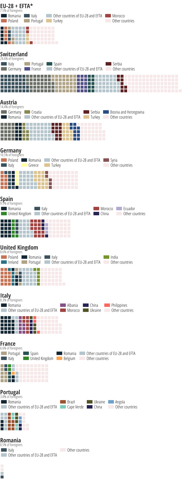

If these countries had 1,000 residents, their foreign population would be equivalent to...
Nationality of those who are not citizens of the country they are living in, as of 2016. Citizens of the EU and EFTA are placed on the left followed by those from other nationalities.
1 square = 1 foreigner. Per thousand residents
